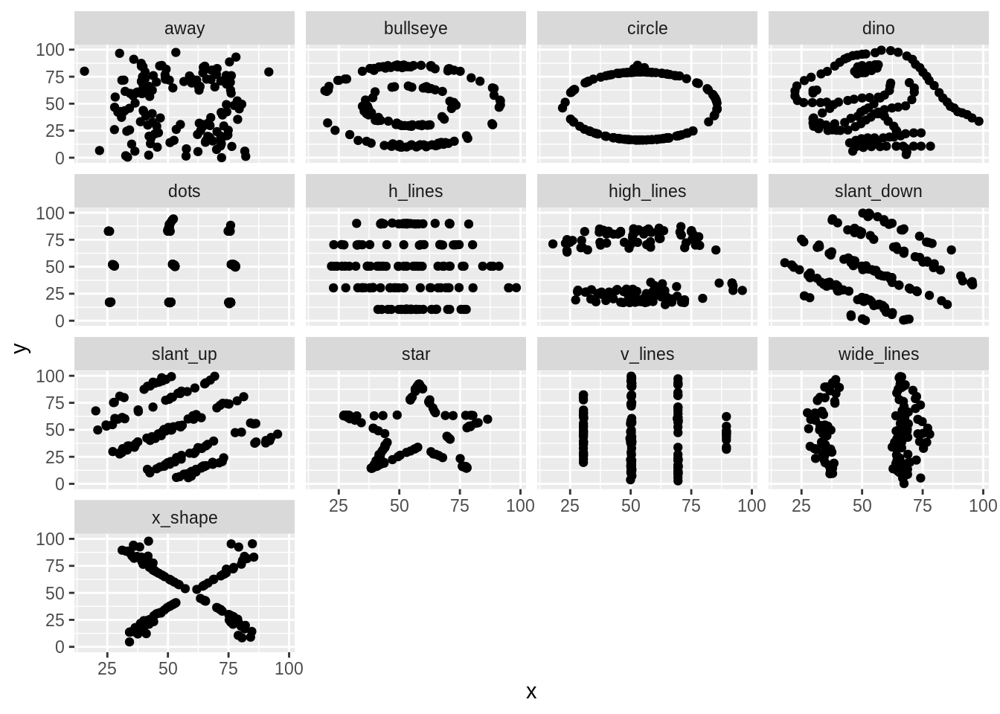

Chapter 11 Visual EDA
- Recommended reading: Weissgerber et al. (2015); Wickham (2010)
- Further reading: Healy (2018), ch. 1; Matejka and Fitzmaurice (n.d.)
11.1 The Role of Visuals in EDA
Tukey (1977) emphasized visual methods for EDA
Including not just graphs but also structured tables, such as stem-and-leaf displays
In terms of our 3 models of EDA (ch. 7)
- Risk management: With the right plot, our visual system can very efficiently detect potential problems in the data that don’t show up easily with summary statistics
- Outliers
- Degeneracies (eg, perfect correlation)
- Skew or bimodal distributions
- Non-linear relationships
- Epicycle of analysis:
- Check expectations about the distribution of variables
- Develop expectations about relationships between variables
- Phenomena development:
- Quickly identify potential patterns
- Contrast potential patterns with noise/uncertainty/imprecision
- Risk management: With the right plot, our visual system can very efficiently detect potential problems in the data that don’t show up easily with summary statistics
11.2 Plot Your Data
- Summary statistics almost always focus only on central tendency (mean, median) and dispersion (standard deviation, IQR)
- This is all you would need if the world were made of normal distributions
- The world is not made of normal distributions (Lyon 2014)
- We’ll illustrate this using The Datasaurus Dozen, a collection of 13 datasets (Matejka and Fitzmaurice n.d.)
- Each dataset has two variables,
xandy
- Each dataset has two variables,
library(tidyverse)
library(datasauRus)
dataf = datasaurus_dozen
dataf## # A tibble: 1,846 x 3
## dataset x y
## <chr> <dbl> <dbl>
## 1 dino 55.4 97.2
## 2 dino 51.5 96.0
## 3 dino 46.2 94.5
## 4 dino 42.8 91.4
## 5 dino 40.8 88.3
## 6 dino 38.7 84.9
## 7 dino 35.6 79.9
## 8 dino 33.1 77.6
## 9 dino 29.0 74.5
## 10 dino 26.2 71.4
## # … with 1,836 more rowscount(dataf, dataset)## # A tibble: 13 x 2
## dataset n
## <chr> <int>
## 1 away 142
## 2 bullseye 142
## 3 circle 142
## 4 dino 142
## 5 dots 142
## 6 h_lines 142
## 7 high_lines 142
## 8 slant_down 142
## 9 slant_up 142
## 10 star 142
## 11 v_lines 142
## 12 wide_lines 142
## 13 x_shape 142- The datasets have the same means, standard deviations, and (Pearson) correlation coefficient
- p-value of the correlation coefficient is not statistically significant
## This is a more complex summarize() call than we've seen before
## 1. Number of rows
## 2. "Summarize across the columns x and y, using the functions mean and sd"; automatically generates names
## 3. Correlation between x and y
## 4. p-value from a t-test of the null that the correlation = 0
dataf %>%
group_by(dataset) %>%
summarize(n = n(),
across(.cols = c(x, y),
.fns = lst(mean, sd)),
cor_xy = cor(x, y),
p_value = cor.test(x, y)$p.value) %>%
ungroup()## `summarise()` ungrouping output (override with `.groups` argument)## # A tibble: 13 x 8
## dataset n x_mean x_sd y_mean y_sd cor_xy p_value
## <chr> <int> <dbl> <dbl> <dbl> <dbl> <dbl> <dbl>
## 1 away 142 54.3 16.8 47.8 26.9 -0.0641 0.448
## 2 bullseye 142 54.3 16.8 47.8 26.9 -0.0686 0.417
## 3 circle 142 54.3 16.8 47.8 26.9 -0.0683 0.419
## 4 dino 142 54.3 16.8 47.8 26.9 -0.0645 0.446
## 5 dots 142 54.3 16.8 47.8 26.9 -0.0603 0.476
## 6 h_lines 142 54.3 16.8 47.8 26.9 -0.0617 0.466
## 7 high_lines 142 54.3 16.8 47.8 26.9 -0.0685 0.418
## 8 slant_down 142 54.3 16.8 47.8 26.9 -0.0690 0.415
## 9 slant_up 142 54.3 16.8 47.8 26.9 -0.0686 0.417
## 10 star 142 54.3 16.8 47.8 26.9 -0.0630 0.457
## 11 v_lines 142 54.3 16.8 47.8 26.9 -0.0694 0.412
## 12 wide_lines 142 54.3 16.8 47.8 26.9 -0.0666 0.431
## 13 x_shape 142 54.3 16.8 47.8 26.9 -0.0656 0.438ggplot(dataf, aes(x, y)) +
geom_point() +
facet_wrap(vars(dataset))
References
Healy, Kieran. 2018. Data Visualization: A Practical Introduction. Princeton University Press. http://books.google.com?id=3XOYDwAAQBAJ.
Lyon, A. 2014. “Why Are Normal Distributions Normal?” The British Journal for the Philosophy of Science 65 (3): 621–49. https://doi.org/10.1093/bjps/axs046.
Matejka, Justin, and George Fitzmaurice. n.d. “Same Stats, Different Graphs: Generating Datasets with Varied Appearance and Identical Statistics Through Simulated Annealing (the Datasaurus Dozen) | Autodesk Research.” Accessed May 21, 2017. https://www.autodeskresearch.com/publications/samestats.
Tukey, John Wilder. 1977. Exploratory Data Analysis. Addison-Wesley Series in Behavioral Science. Reading, Mass: Addison-Wesley Pub. Co. https://archive.org/details/exploratorydataa00tuke_0.
Weissgerber, Tracey L., Natasa M. Milic, Stacey J. Winham, and Vesna D. Garovic. 2015. “Beyond Bar and Line Graphs: Time for a New Data Presentation Paradigm.” PLoS Biol 13 (4): e1002128. https://doi.org/10.1371/journal.pbio.1002128.
Wickham, Hadley. 2010. “A Layered Grammar of Graphics.” Journal of Computational and Graphical Statistics 19 (1): 3–28. https://doi.org/10.1198/jcgs.2009.07098.